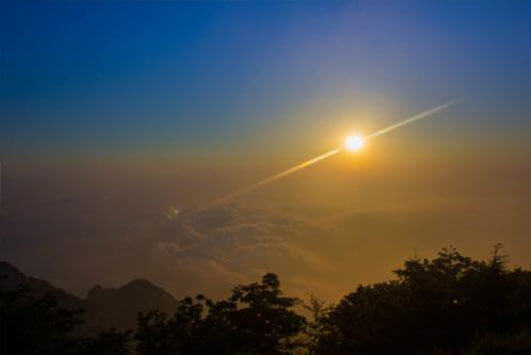
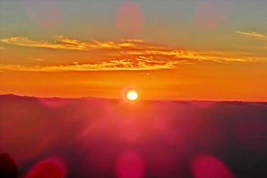
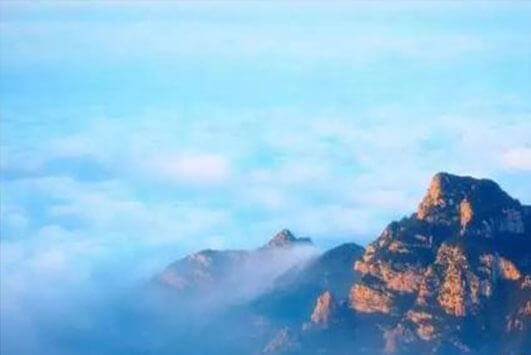
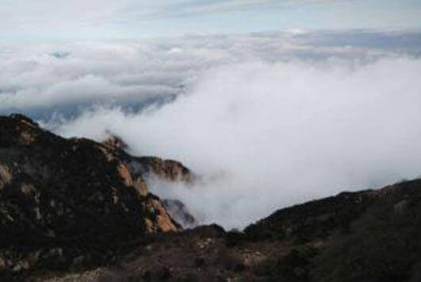
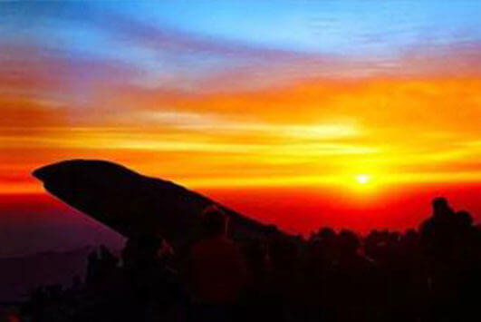
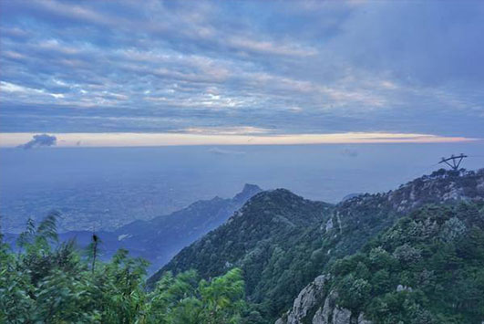
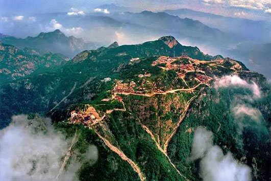

morly旅游网
泰山又名岱山、岱宗、岱岳、东岳、泰岳，位于山东省中部，隶属于泰安市，绵亘于泰安、济南、淄博三市之间，有“五岳之首”、“五岳之长”、五岳之尊、“天下第一山”之称。是世界自然与文化遗产，世界地质公园，国家AAAAA级旅游景区，国家级风景名胜区，全国重点文物保护单位，全国文明风景旅游区。“泰山”之称最早见于《诗经》。“泰”意为极大、通畅、安宁。《易·说卦》“履而泰，然后安”。“泰”字就有原来的高大、通畅之意引申为，“大而稳，稳而安”。随即出现了“稳如泰山”、“国泰民安”、“泰山鸿毛”之说。泰山曾被古人认为是直通帝座的天堂，一直被人们所崇拜。泰山曾是帝王告祭的神山，又有“泰山安，四海皆安”的说法。
五岳为群山之尊，泰山为五岳之长。由此可见，泰山的风景是多么壮丽。泰山游玩的最佳时间为每年的5月到11月，你可以观看独属于泰山的四大奇观，这四大奇观分别是泰山日出、云海玉盘、晚霞夕照、黄河金带。泰山的日出是十分壮观的，旭日的曙光慢慢划破了黎明前的黑暗，远方天幕由鱼肚白逐渐变为耀眼的金黄，整个日出过程瞬息万变、绚丽多彩，所以泰山日出一直为人们向往的景色。泰山云海玉盘多在夏秋两季出，雨后初晴，大量水蒸气蒸发上升，在岱顶可以看见白云平铺万里，犹如一个巨大的玉盘悬浮在天地之间。泰山周围的群山或全被云海吞没，或留有几座山头露出云端。此时漫步在岱顶，犹如步入云间仙界。泰山的晚霞夕照也是错失的景观之一，当雨过天晴，天高气爽，夕阳西下的时候，若漫步泰山极顶，仰望西天：朵朵残云如峰似峦，一道道金光穿云破雾，直泻人间。在夕阳的映照下，天边被霞光渲染成耀眼的红色，十分美丽，仿佛有人在天边画了一幅靓丽的作品。黄河金带一般出现在新霁无尘、夕阳西下时，举目远眺，在泰山的西北边，你可以看到一条金色的飘带似的黄河在天边闪闪发光。黄河金带可能是河水反射到天空、造成蜃景。
泰山六大风景旅游区包括幽区、妙区、奥区、旷区、秀区、丽区。这六大景区是根据不同的景观特点来划分的。幽区，从岱庙沿泰山中溪路到南天门是登山盘路最长、曲径通幽的风景区，故称“幽区”。妙区景点繁多，景色迷人，漫步大街.烟雾缭绕，意境玄妙，故称为泰山的“妙区”。奥区林茂谷深，怪石突兀，松籁云罩，清雅深奧，所以被称为“奥区”。旷区峰峦起伏，泉清石奇，山光水色，风景如画，谷深峪长，豁达开阔，游人至此，神怡心旷，所以被称为“旷区”。秀区，奇峰垒列，林深涧曲，干潭叠瀑，千壑汇川，蔚然深秀，故称为“秀区”。丽区城相连，山水相映，名胜古迹、城市新貌相映成趣，风景秀丽，故称“丽区”。
泰山风景壮丽，一直有“五岳独尊”的美誉，是游玩的最佳景点，错过泰山的美景，该是多么的遗憾啊。
登山线
第一条：最经典的红门路徒步中线，其实是中线登封御道。岱庙—红门—岱顶这条古老的传统线路。第二条是坐汽车上山的环山公路线，也可以徒步爬山。天外村（天地广场）—环山路—竹林寺—黄溪河水库—中天门—南天门—玉皇顶。第三条是从西北侧山口进，也就是是桃花源入口，为环山公路，也可徒步爬山。桃花峪入口—环山公路—彩石溪—赤磷鱼保护区—桃花源索道—南天门—玉皇顶。第四条是东北侧山口方向，一般说是天烛峰，也就是后山。
泰山日出
泰山日出是壮观而动人心弦的，是岱顶奇观之一，也是“天下第一山”——泰山的重要标志。
 云海玉盘
云海玉盘是岱顶的又一奇观。微风吹来，云海浮波，诸峰时隐时现，像不可捉摸的仙岛，风大了，玉盘便化为巨龙，上下飞腾，倒海翻江。
 晚霞夕照
在夕阳的映照下，云峰之上均镶嵌着一层金灿灿的亮边，闪烁着奇珍异宝般的光辉。“谁持彩笔染长空，几处深黄几处红。”“清泉泻万仞，落日御千峰。”
黄河金带
黄河金带波光粼粼，银光闪烁，黄白相间，如同金银铺就，从西南至东北，一直伸向天地交界处。
 内容整理至网络，如有侵权，请联系我们！1255394075@qq.com